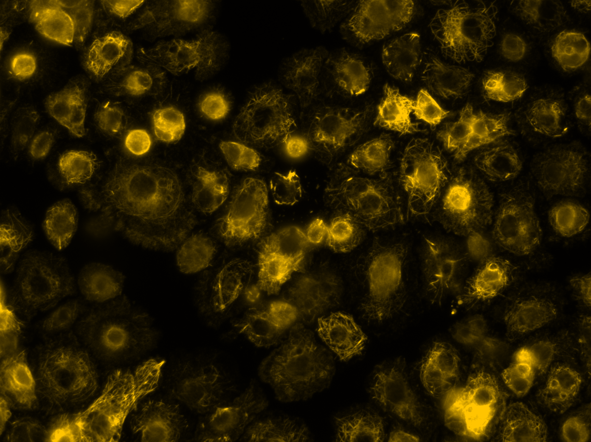
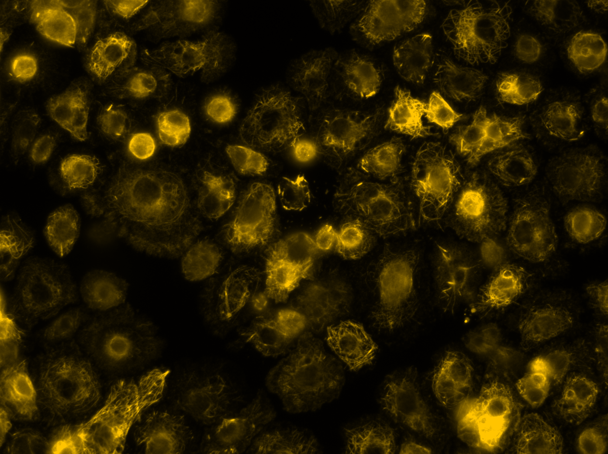

Certified Ophthalmic Assistant
Duke Department of Ophthalmology
Retina & Glaucoma Division
Main Campus
Durham, North Carolina
09/23/2024 - Present
 Click to learn about the Duke Eye Center
Click to learn about the Duke Eye Center
- Performs preliminary eye exams with high-level imaging, anterior segment exams, and visual field testing
- Prepares patients prior to procedures such as cataract surgery and lasers
- Maintains a clean and safe environment within the clinic for JCAHO inspections
- Performs refraction to measure patient's prescription for glasses
- Administers eye drops to adjust intraocular pressure
 Volunteer at the Duke University Hospital
Volunteer at the Duke University Hospital
 View Stephen Wenzel Photography
View Stephen Wenzel Photography
 Videos of the 2023 Marching Mountaineers
Videos of the 2023 Marching Mountaineers
 View the MEA Website
View the MEA Website
 
Dr. Stephen Rogers' Lab
Learn the Nikon Eclipse Ti2 Series

Dr. Stephen Rogers' Lab
Learn the Nikon Eclipse Ti2 Series
 How to be a Great Peer Mentor
The Power of Peer Mentoring
How to be a Great Peer Mentor
The Power of Peer Mentoring
 Learn about the CCSSC
Learn about the CCSSC